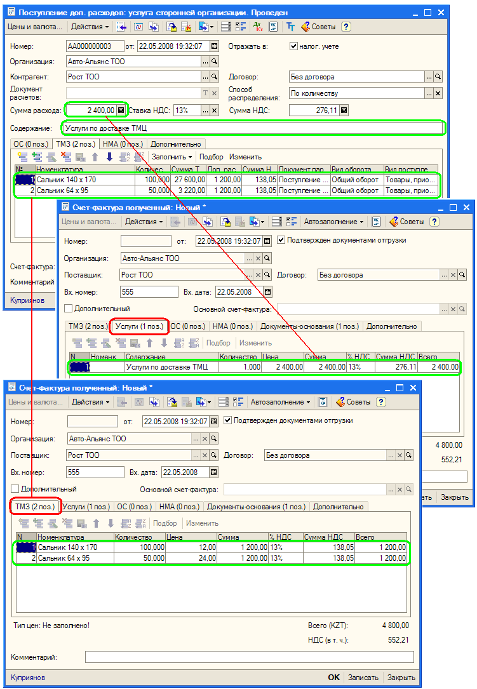

Документ «Счет-фактура полученный» может вводится как на основании другого документа («Возврат товаров поставщику», «Поступление доп.расходов», «Поступление из переработки», «Поступление НМА», «Поступление товаров и услуг», «Сторнирование»), в котором уже есть все основные данные: о поставщике, о товарах, работах или услугах, так и непосредственно из списка полученных счетов-фактур, путем ввода нового документа. Также документ «Счет-фактура полученный» может вводиться напрямую из документа «Авансовый отчет».
Информация в документе «Счет-фактура полученный» заполняется в соответствии с информацией, введенной в документе-основании.
Для ввода документа «Счет-фактура полученный» в документах, на основании которых он вводится, предусмотрена кнопка «Ввести счет-фактуру».
В состав документа входят:
При вводе счет-фактуры на основании документов отгрузки по умолчанию заполняются все табличные части и устанавливается признак Подтвержден документами отгрузки, и в данном случае данные документа не редактируются. Если необходимо внести изменения в счет-фактуру, то нужно снять признак Подтвержден документами отгрузки. Заполнение счет-фактуры происходит по совпадению табличных частей из документа-основания, исключение составляют документы:

Когда уже сформированы счета-фактуры для строк документа "Авансовый отчет", и были откорректированы данные: номер счет-фактуры, дата счет-фактуры или поставщик, тогда:
- если количество документов-оснований больше одного и не используется для других строк авансового отчета, тогда данный документ-отгрузки удаляется из списка документов-оснований счет-фактуры, и если у счет-фактуры установлен признак Подтвержден документами отгрузки, то данные счет-фактуры перезаполняются.
При добавлении документов-оснований в счет-фактуру, табличные части автоматически не заполняются данными из документа отгрузки. Для заполнения счет-фактуры данными из документов-оснований можно воспользоваться действиями подменю Автозаполнение, которое расположено в верхней командной панели:
1) Перезаполнить по документам основания - синхронизация данных счет-фактуры и документов-оснований.
2) Добавить из документа основания – добавление к уже имеющемся данным в счет-фактуре, данных по выбранному документу-основанию. В случае когда, документов-оснований несколько, то пользователю сначала предоставляется список документов, из которого он должен выбрать один документ-основание.
Если меняется документ отгрузки, у которого уже имеется сопутствующая счет-фактура и у нее установлен признак Подтвержден документами отгрузки, то при проведения документа отгрузки данные счет-фактуры по умолчанию синхронизируются с данными документа-основания.
В случае, когда документ отгрузки помечается на удаление, и для данного документа заведена счет-фактура тогда,
На основании счет-фактуры можно ввести следующие документы отгрузки: Возврат товаров поставщику», «Поступление доп.расходов», «Поступление из переработки», «Поступление НМА», «Поступление товаров и услуг», причем осуществляется контроль по уже введенным документам отгрузки, например: Товара А было 30 штук, вы ввели документ отгрузки на 15 штук, то в следующий раз уже при вводе на основании счета-фактуры документа отгрузки заполнится 15 штук, а не 30 (поиск уже использованной номенклатуры для ТМЗ осуществляется по: номенклатуре, цене, ед.измерения, ставки НДС; для Услуг по :номенклатуре, содержанию, ставке НДС; для ОС по: основному средству, ставку НДС; для НМА по : нематериальному активу, ставке НДС).
При вводе документа "Поступление доп.расходов" на основании счет-фактуры заполняются данные только с табличной части "Услуги", т.е. в документе "Поступление доп.расходов" должны заполниться только реквизиты шапки, причем если в документе "Счет-фактура полученный" несколько строк, то сумма расхода берется суммарная по всем услугам, с учетом остатков и ставка НДС заполняется лишь только в том случае, если она одинакова по всем строкам оставшихся услуг.
Важно: При вводе документа "Поступление доп.расходов" на основании счет-фактуры данные с табличной части "Товары" счет-фактуры не будут заполняться в табличную часть "Товары" документа "Поступление доп.расходов"!.